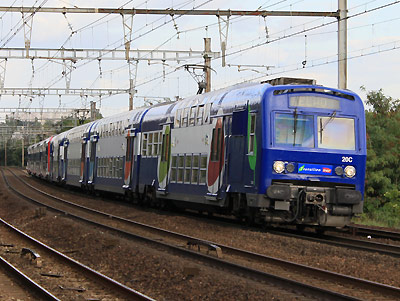

Z 5600
Z2N à courant continu
Les Z 5600 sont des éléments automoteurs monocourants continu 1,5 kV à deux niveaux conçus pour le service de Banlieue Parisienne et construits à 52 exemplaires de 1983 à 1985. Elles roulent sur le RER C et en grande banlieue Sud-Est (Paris-Lyon / Montereau ou Montargis).
Elles peuvent fonctionner en unités multiples entres elles et avec les Z 8800, Z 20500 et Z 20900 qui composent le parc de "Z2N".
Bien que monocourant 1,5 kV continu, les pantographes des Z 5600 ont des archets étroits.
Génèse
Les Z 5600 sont dérivées des voitures à deux niveaux de banlieue VB2N. Les premiers projets, prenant en compte l'équipement d'un transformateur dans les futures automotrices bicourant (Z 8800), avaient une structure à un seul niveau avec l'équipement électrique placé de façon classique sous le plancher (transformateur et batteries) ou en toiture (rhéostat). Finalement, une réorganisation des compartiments techniques et l'adoption de hacheurs de courants a permis de conserver un segment central à deux étages comme sur les remorques. Celui-ci étant raccourci à cinq travées en raison de l'emplacement en toiture des pantographe et disjoncteur d'un côté, et des batteries de l'autre. Les remorques ont été livrées bien avant les automotrices.
Afin de les exploiter dans la nouvelle gare souterraine de Paris-Gare de Lyon, des segments de huit remorques étaient, dès 1982, encadrés par deux BB 8500 fonctionnant en unité multiple grâce au câblage de la rame. Un convertisseur statique d'appoint devant fournir le courant basse tension était installé provisoirement dans une salle voyageurs. Les automotrices ne furent mises en service qu'en 1984.
Service
Les Z 5600 ont été commandées pour étoffer la desserte banlieue de Paris-Gare de Lyon et la "Transversale Rive Gauche" qui résultait de la connexion entre la ligne de la gare d'Orsay et celle des Invalides. Ce tronçon est désormais l'épine dorsale du RER C.
Depuis la mise en place du RER D sur la proche banlieue Sud-Est et son équipement exclusif en Z 20500, les Z 5600 Sud-Est assurent les relations de grande banlieue au-delà de Melun jusque Montargis ou Montereau. Elles poussaient même jusque Laroche-Migennes en composition de 12 caisses avant que ce service soit repris par des rames tractées en V2N ou Corail réversibles.
Le parc RER C se divise en deux lots distincts. Les rames à 4 caisses sont utilisées en UM avec tout autre type de Z2N. Les rames "Evolys" à 6 caisses sont utilisées en US sur la relation en quasi-boucle Versailles-Rive-Gauche/Juvisy/Versailles Chantiers.
Composition des rames
Les rames ont une composition à quatre caisses : M+R+R+M ou six caisses M+R+R+R+R+M (rames Evolys et Sud-Est).
Les rames Sud-Est ont quatre remorques ZR 25600 ou 35600 selon la classe.
Les rames Evolys n'ont que deux remorques d'origine ZR 25600 ou 35600. La composition fut renforcée par deux anciennes VB2N dont le chaudron est très proche et qui se distinguent principalement par l'aménagement intérieur (banquettes au lieu de sièges individuels), les bogies (suspension primaire par silent-bloc) et les portes d'accès à loquet.
Les rames Z5600 sont désignées par un numéro suivi de la lettre "C" pour "continu" sauf les Evolys notée "T".
Quelques données techniques
Constructeur : Alstom
Tension d'alimentation : continu 1,5 kV
Chaîne de traction : Hacheur - Moteur série à courant continu
Motorisation : 2 moteurs par bogie, 2 bogies moteurs par motrices.
Puissance totale : 2800 kW
Longueur : 99m ou 147m
Masse : 216t ou 296t selon la composition
Pour plus d'info :
La fiche Z 5600 sur Wikipedia
Fiche technique des Z 5600 de Florent Brisou
Le dossier Z5600 sur Metro-pole.net (archive)
L'inventaire des Z 5600 sur Trains du Sud-Ouest
La Z 5630 (rame Sud-Est) emmène une composition de 12 caisses vers Laroche-Migennes, à Pont-sur-Yonne (10/09/2006)
La même Z 5630 modernisée, passe à Vert de Maisons (17/06/2012)
La Z 5662 en UM sur le RER C à Epinay sur Orge (19/09/2011)

La Z 5639-40 sur le RER C à Epinay/Orge (19/09/2011)

La Z 5682 Evolys sur une mission JILL à Athis-Mons (10/09/2011)
La rame 32T (5663/64) pelliculée pour l'exposition SNCF au Grand Palais a conservé sa teinte violette unique invitant à visiter les monuments Parisien avec le RER C jusqu'à sa rénovation Carmillon (Vauboyen, 22/06/2010)
La Z 5685-86 fraîchement repeinte en livrée STIF/Carmillon à St Pierre des Corps (27/03/2014)